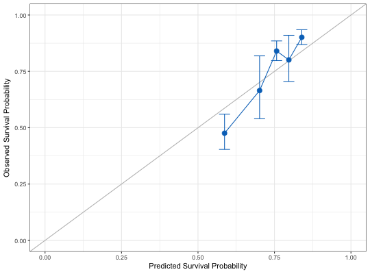
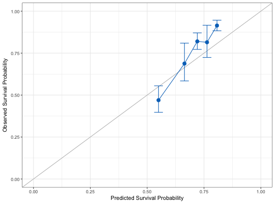
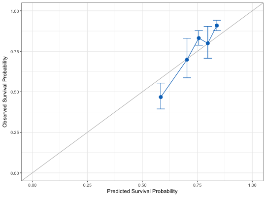
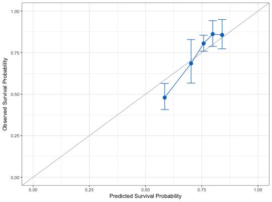

Calibrate High-Dimensional Cox Models
hdnom.calibrate(x, time, event, model.type = c("lasso", "alasso", "flasso", "enet", "aenet", "mcp", "mnet", "scad", "snet"), alpha, lambda, pen.factor = NULL, gamma, lambda1, lambda2, method = c("fitting", "bootstrap", "cv", "repeated.cv"), boot.times = NULL, nfolds = NULL, rep.times = NULL, pred.at, ngroup = 5, seed = 1001, trace = TRUE)
x.x."lasso",
"alasso", "flasso", "enet", "aenet",
"mcp", "mnet", "scad", or "snet".enet, aenet, mnet, and snet models.
For lasso, alasso, mcp, and scad models,
please set alpha = 1.
alpha=1: lasso (l1) penalty; alpha=0: ridge (l2) penalty.
Note that for mnet and snet models,
alpha can be set to very close to 0 but not 0 exactly."fitting", "bootstrap", "cv",
and "repeated.cv".TRUE.library("survival") # Load imputed SMART data data("smart") x = as.matrix(smart[, -c(1, 2)]) time = smart$TEVENT event = smart$EVENT y = Surv(time, event) # Fit Cox model with lasso penalty fit = hdcox.lasso(x, y, nfolds = 5, rule = "lambda.1se", seed = 11) # Model calibration by fitting the original data directly cal.fitting = hdnom.calibrate( x, time, event, model.type = "lasso", alpha = 1, lambda = fit$lasso_best_lambda, method = "fitting", pred.at = 365 * 9, ngroup = 5, seed = 1010)#> Start fitting ...# Model calibration by bootstrap # Normally boot.times should be set to 200 or more, # we set it to 3 here only to save example running time. cal.boot = hdnom.calibrate( x, time, event, model.type = "lasso", alpha = 1, lambda = fit$lasso_best_lambda, method = "bootstrap", boot.times = 3, pred.at = 365 * 9, ngroup = 5, seed = 1010)#> Start bootstrap sample 1 #> Start bootstrap sample 2 #> Start bootstrap sample 3# Model calibration by 5-fold cross-validation cal.cv = hdnom.calibrate( x, time, event, model.type = "lasso", alpha = 1, lambda = fit$lasso_best_lambda, method = "cv", nfolds = 5, pred.at = 365 * 9, ngroup = 5, seed = 1010)#> Start fold 1 #> Start fold 2 #> Start fold 3 #> Start fold 4 #> Start fold 5# Model calibration by repeated cross-validation cal.repcv = hdnom.calibrate( x, time, event, model.type = "lasso", alpha = 1, lambda = fit$lasso_best_lambda, method = "repeated.cv", nfolds = 3, rep.times = 3, pred.at = 365 * 9, ngroup = 5, seed = 1010)#> Start repeat round 1 fold 1 #> Start repeat round 1 fold 2 #> Start repeat round 1 fold 3 #> Start repeat round 2 fold 1 #> Start repeat round 2 fold 2 #> Start repeat round 2 fold 3 #> Start repeat round 3 fold 1 #> Start repeat round 3 fold 2 #> Start repeat round 3 fold 3print(cal.fitting)#> High-Dimensional Cox Model Calibration Object #> Random seed: 1010 #> Calibration method: fitting #> Model type: lasso #> glmnet model alpha: 1 #> glmnet model lambda: 0.01620998 #> glmnet model penalty factor: not specified #> Calibration time point: 3285 #> Number of groups formed for calibration: 5summary(cal.fitting)#> Calibration Summary Table #> Predicted Observed Lower 95% Upper 95% #> 1 0.5867665 0.4756039 0.4037162 0.5602922 #> 2 0.7013731 0.6649731 0.5400804 0.8187470 #> 3 0.7570641 0.8402387 0.7977191 0.8850247 #> 4 0.7969468 0.8009555 0.7048913 0.9101115 #> 5 0.8393141 0.9011939 0.8687962 0.9347997plot(cal.fitting)print(cal.boot)#> High-Dimensional Cox Model Calibration Object #> Random seed: 1010 #> Calibration method: bootstrap #> Bootstrap samples: 3 #> Model type: lasso #> glmnet model alpha: 1 #> glmnet model lambda: 0.01620998 #> glmnet model penalty factor: not specified #> Calibration time point: 3285 #> Number of groups formed for calibration: 5summary(cal.boot)#> Calibration Summary Table #> Predicted Observed Lower 95% Upper 95% #> 1 0.5500014 0.4697376 0.3973646 0.5552920 #> 2 0.6641171 0.6878699 0.5843790 0.8096885 #> 3 0.7204872 0.8199909 0.7723427 0.8705787 #> 4 0.7632026 0.8147274 0.7244054 0.9163111 #> 5 0.8071295 0.9143259 0.8832563 0.9464883plot(cal.boot)print(cal.cv)#> High-Dimensional Cox Model Calibration Object #> Random seed: 1010 #> Calibration method: k-fold cross-validation #> Cross-validation folds: 5 #> Model type: lasso #> glmnet model alpha: 1 #> glmnet model lambda: 0.01620998 #> glmnet model penalty factor: not specified #> Calibration time point: 3285 #> Number of groups formed for calibration: 5summary(cal.cv)#> Calibration Summary Table #> Predicted Observed Lower 95% Upper 95% #> 1 0.5838591 0.4675519 0.3945238 0.5540979 #> 2 0.7029040 0.6982853 0.5867801 0.8309796 #> 3 0.7566084 0.8315265 0.7875912 0.8779128 #> 4 0.7975700 0.7993794 0.7070266 0.9037955 #> 5 0.8387503 0.9090449 0.8776173 0.9415978plot(cal.cv)print(cal.repcv)#> High-Dimensional Cox Model Calibration Object #> Random seed: 1010 #> Calibration method: repeated cross-validation #> Cross-validation folds: 3 #> Cross-validation repeated times: 3 #> Model type: lasso #> glmnet model alpha: 1 #> glmnet model lambda: 0.01620998 #> glmnet model penalty factor: not specified #> Calibration time point: 3285 #> Number of groups formed for calibration: 5summary(cal.repcv)#> Calibration Summary Table #> Predicted Observed Lower 95% Upper 95% #> 1 0.5850609 0.4793403 0.4071597 0.5643170 #> 2 0.7025410 0.6851445 0.5666195 0.8284625 #> 3 0.7583416 0.8051270 0.7584472 0.8546798 #> 4 0.7987279 0.8614493 0.7875460 0.9422877 #> 5 0.8405062 0.8565130 0.7729964 0.9490529plot(cal.repcv)